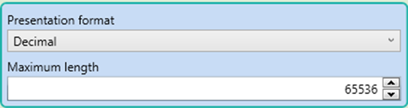
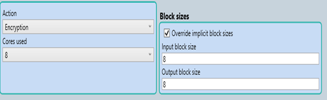
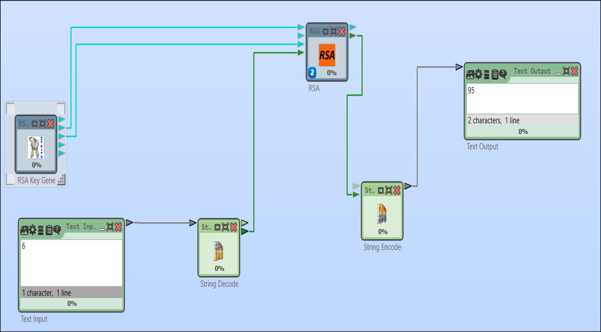

CrypTool 2 — бұл криптографияны зерттеу мен оқытуға арналған ашық бастапқы кодты бағдарлама. Ол шифрлау, дешифрлау және криптоанализ алгоритмдерін визуалды түрде зерттеуге мүмкіндік береді. CrypTool 2 классикалық және заманауи криптография әдістерін, хэш-функцияларын, сондай-ақ ашық кілтті шифрлау алгоритмдерін қолданады. Бағдарлама оқу процесінде қолдануға өте ыңғайлы, себебі оның интерфейсі қарапайым, ал алгоритмдердің орындалуын блок-схема түрінде көруге болады. CrypTool 2 — криптографияның теориялық негіздерін тәжірибемен ұштастыру үшін таптырмас құрал.
Text Input (Мәтінді енгізу) – Бұл блок арқылы мәтінді енгізуге болады. Оны шифрлау, дешифрлау немесе басқа криптографиялық операциялар үшін бастапқы дерек ретінде қолданады.
Text Output (Мәтінді шығару) – Бұл блок операция нәтижесін (шифрланған мәтін, дешифрланған мәтін және т.б.) көрсету үшін қолданылады.
String Encoder (Жолды кодтау) – Мәтінді белгілі бір кодтау форматына түрлендіреді (мысалы, ASCII, UTF-8 және т.б.). Бұл блок криптографиялық операцияларды орындау үшін деректерді сандық форматқа ауыстырады.
String Decoder (Жолды декодтау) – Кодталған сандық деректерді бастапқы мәтінге қайта түрлендіреді. Дешифрланған мәліметтерді түсінікті мәтін ретінде көрсетуге мүмкіндік береді.
RSA Key Generator (RSA кілтін генерациялау) – RSA алгоритмі үшін ашық және жабық кілттерді (e, d, n) автоматты түрде есептеп береді. Бұл блокта бастапқы параметрлерді (p, q, e) орнатуға болады.
RSA – RSA алгоритмін іске асыратын негізгі блок. Ол ашық кілтпен мәтінді шифрлау (C = Me mod n) және жабық кілтпен дешифрлау (M = Cd mod n) операцияларын орындайды.
String Decoder
String Encoder
RSA
Мақсаты:Кодталған сандық немесе басқа форматтағы деректерді бастапқы жол түріне қайта түрлендіреді.
Конфигурация:
Input format (Кіріс форматы):
Use separators for grouping (Топтастыру үшін бөлгіштерді қолдану):
Set of separators (Бөлгіштердің жиынтығы):
Мақсаты:Бастапқы мәтінді белгілі бір форматта (мысалы, сандық немесе символдық код) кодтайды.
Конфигурация:
Presentation format (Шығыс форматы):
Maximum length (Максималды ұзындық):
Конфигурация сипаттамасы:
Block sizes (Блок өлшемдері):
Text Input (Мәтінді енгізу): Мәтіндік мәнін жазып жобаны орындауға жібереміз. Орындауға жіберу үшін Play батырмасын басып Text Output (Мәтінді шығару) блогында С-дің мәнін көреміз.
Жауабы: С = 95
p = 11, q = 17 ,e = 7
Мәтін: M = 8
Шифрмәтінді (C) табыңыз.
Мысалдағы 95 шифрланған мәтінін дешифрлайтын бағдарлама құрыңыз.
"CRYPTO" сөзін шифрлаңыз.( "CRYPTO" мәтінін ASCII кодына түрлендіріңіз)
p=17, q=19, e = 13